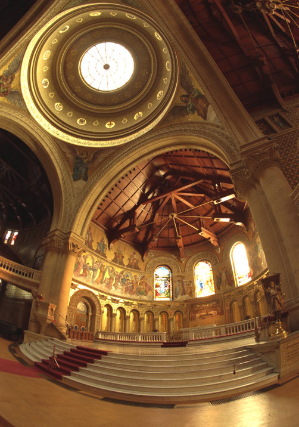
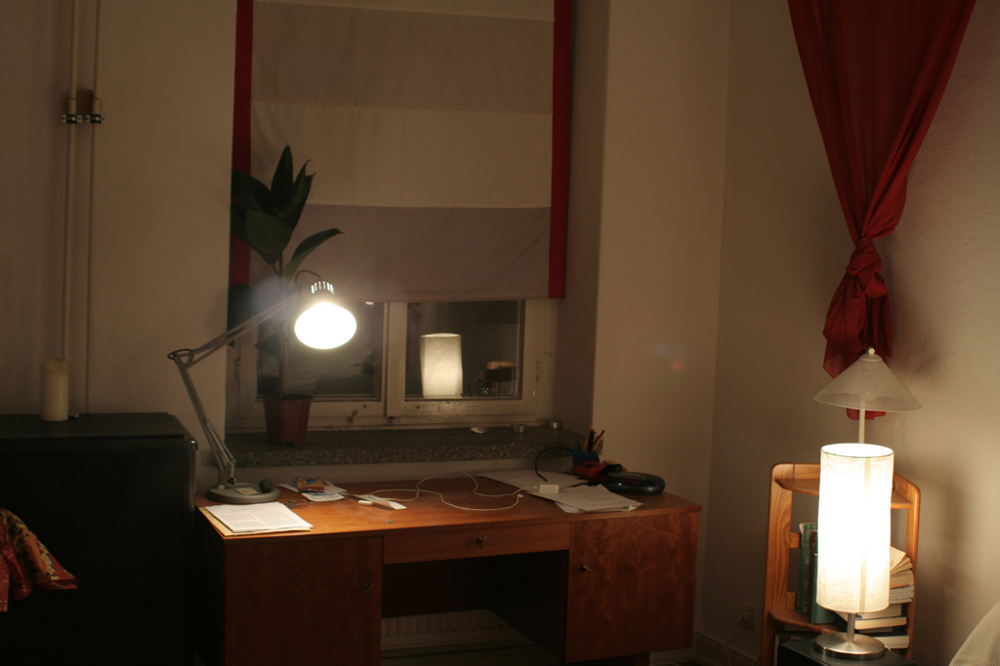
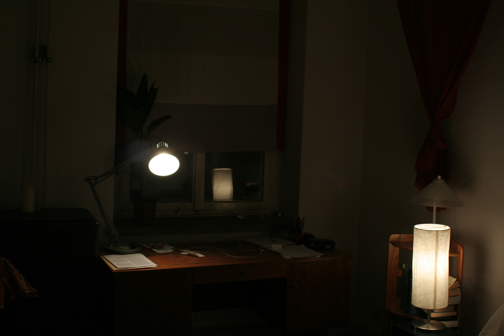

T = 1/160 seconds
T = 1/320 seconds
T = 1/800 seconds

T = 1/1600 seconds
T = 1/3200 seconds
This project attempts to create HDR photos by automatically combining multiple exposures into a single high dynamic range radiance map, and then converting this radiance map to an image suitable for display through tone mapping. The first step of creating radiance maps follows the algorithm presented in the paper by Paul E. Debevec and Jitendra Malik, Recovering High Dynamic Range Radiance Maps from Photographs, and the second step of tone mapping follows the method by Fre ́do Durand and Julie Dorsey, Fast Bilateral Filtering for the Display of High-Dynamic-Range Images.
The observed pixel value \(Z_{i j} \) for pixel \(i\) in image \(j\) is a function of unknown scene radiance and known exposure duration: \[Z_{i j} = f (E_i \nabla t_j)\]. \(E_i\) is the unknown radiance and \(\nabla t_j \) is the exposure time at pixel \(i\). Together their product is the exposure at that pixel. And \(f\) is an unknown, complicated pixel response curve. Instead of solving for \(f\), we solve for \(g = ln(f^{-1})\) which maps a discrete pixel value (0 to 255) to the log exposure at that pixel. The function \(g\) can be written as: \[g(Z_{i j}) = ln(E_i) + ln(t_j)\]. Since the scene radiance remains constant across multiple images that we take and we know the exposure time, we can try to solve for \(g\) by setting up a quadratic objective function that we wish to minimize: \[O = \sum_{i=1}^{N} \sum_{j=1}^{P} (g(Z_{i j}) - ln(E_i) - ln(\nabla t_j))^2 + \lambda \sum_{z=1}^{254} g''(z)^2\] where the first term ensures the solution satisfies the previous equation as close as possible and the second term is a smoothing function whose effect we examine below. Having obtained \(g\), we can find the scene radiance by rearanging the above equation: \[ln(E_i) = g(Z_{i j}) - ln(\nabla t_j)\]. During our estimation, we also apply the tent weighting function as suggested in the paper. All the exposures contribute to the final resulting image. However, darker pixels tends to have higher noise and the bright pixels also satuate. Therefore, we give less weighting to those pixels. The formulation of such weighting function as suggested in the paper is: \[ w(z) = \begin{cases} z \text{ for } z \leq 127 \\[.5em] 255 - z \text{ for } z > 127 \end{cases} \]. We show the reference image (one image selected from each scene) and the reconstructed radiance map below.
|  Chapel |
Radiance Map |
House |
Radiance Map |
Chapel between the exposure and pixel values, both without and with the second-derivative smoothing term and tent function weighting. We observe that the smoothing term plays a major role in separating out the noise, and the tent weighting function does not contribute significantly to the result in this set of images.
\(\lambda = 0\), identity weighting |
\(\lambda = 100\), identity weighting |
\(\lambda = 0\), tent weighting |
\(\lambda = 100\), tent weighting |
Obtaining the radiance map is only the first step of creaing a great HDR image. The next step is to show details in the dark and bright regions of the scene on a low-dynamic-range display. In this step, we implement both a global tone-mapping operator using gamma compression and a local tone-mapping operator following the paper by Fre ́do Durand and Julie Dorsey. The local tone-mapping algorithm is based on bilateral filtering, which decomposes the radiance map into high-frequency details and low-frequency structure.
We show the final images obtained by both tone-mapping methods and the bilateral decomposition below.
Please zoom in to see the bilateral-filtered detail since the pixel values tend to have small variance and may not be visible at small scale.
T = 1/160 seconds |
T = 1/320 seconds |
T = 1/800 seconds |
T = 1/1600 seconds |
T = 1/3200 seconds |
Global Tone-Mapped HDR |
 Bilateral Filtered Detail |
Bilateral Filtered Structure |
Local Tone-Mapped HDR |
T = 1/8 seconds |
T = 1/20 seconds |
 T = 1/40 seconds |
T = 1/80 seconds |
T = 1/160 seconds |
Global Tone-Mapped HDR |
Bilateral Filtered Detail |
 Bilateral Filtered Structure |
Local Tone-Mapped HDR |
T = 4 seconds |
 T = 1 second |
 T = 1/4 seconds |
 T = 1/15 seconds |
 T = 1/60 seconds |
Global Tone-Mapped HDR |
Bilateral Filtered Detail |
Bilateral Filtered Structure |
 Local Tone-Mapped HDR |
Chapel image below. We can see that the image obtained with this method also achieves reasonable tone-mapping result, but it has high contrast and is not as bright as the the local tone-mapping method based on bilateral filter that we have shown above.
Bilateral Tone-Mapping |
Template Tone-Mapping |
[1] Debevec, Paul E., and Jitendra Malik. "Recovering high dynamic range radiance maps from photographs." ACM SIGGRAPH 2008 classes. 2008. 1-10.
[2] Durand, Frédo, and Julie Dorsey. "Fast bilateral filtering for the display of high-dynamic-range images." Proceedings of the 29th annual conference on Computer graphics and interactive techniques. 2002.
[3] Dataset from the HDR assignment from the Computational Photography course at Brown University.
We work together in most parts of the project, including data collection and implementation of radiance map reconstruction and tone-mapping algorithms. Visualization is done by Chelsea and HTML is created and formatted by Wenlong. Our third member has dropped the course and thus is not a part of the project. This project is also done as a final project for CS194-26.